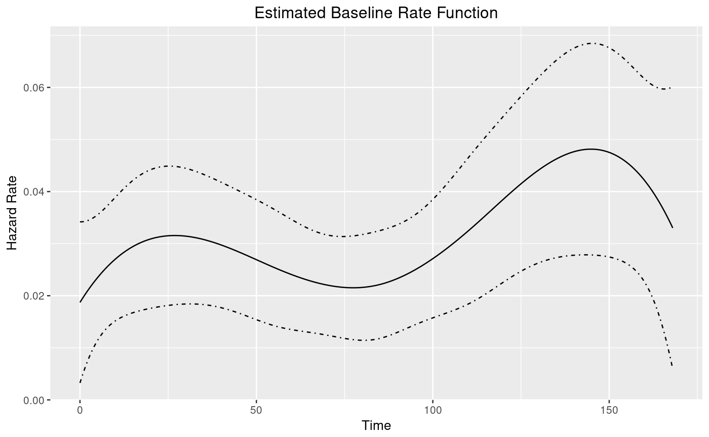
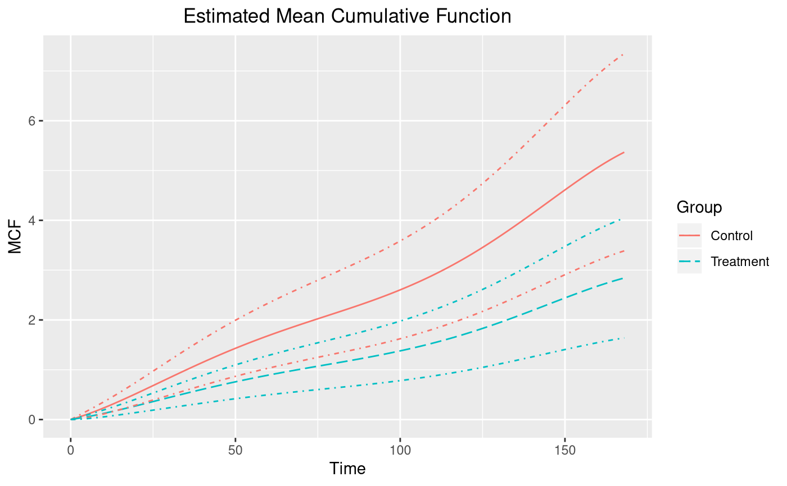
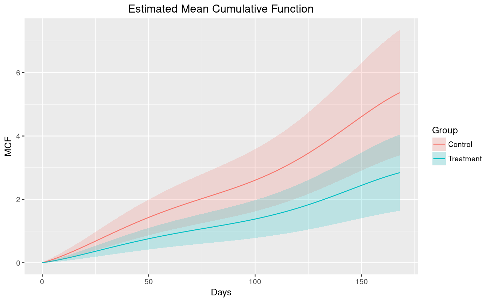

Recurrent Events Regression Based on Counts and Rate Function
This function fits recurrent event data (event counts) by gamma frailty model with spline rate function. The default model is the gamma frailty model with one piece constant baseline rate function, which is equivalent to negative binomial regression with the same shape and rate parameter in the gamma prior. Spline (including piecewise constant) baseline hazard rate function can be specified for the model fitting.
rateReg(formula, data, subset, df = NULL, knots = NULL, degree = 0L, na.action, spline = c("bSplines", "mSplines"), start = list(), control = list(), contrasts = NULL, ...)
Arguments
| formula |
|
|---|---|
| data | An optional data frame, list or environment containing the
variables in the model. If not found in data, the variables are taken
from |
| subset | An optional vector specifying a subset of observations to be used in the fitting process. |
| df | An optional nonnegative integer to specify the degree of freedom
of baseline rate function. If argument |
| knots | An optional numeric vector that represents all the internal
knots of baseline rate function. The default is |
| degree | An optional nonnegative integer to specify the degree of spline bases. |
| na.action | A function that indicates what should the procedure do if
the data contains |
| spline | An optional character that specifies the flavor of splines.
The possible option is |
| start | An optional list of starting values for the parameters to be estimated in the model. See more in Section details. |
| control | An optional list of parameters to control the maximization process of negative log likelihood function and adjust the baseline rate function. See more in Section details. |
| contrasts | An optional list, whose entries are values (numeric
matrices or character strings naming functions) to be used as
replacement values for the contrasts replacement function and whose
names are the names of columns of data containing factors. See
|
| ... | Other arguments for future usage. |
Value
A rateReg object, whose slots include
call: Function call ofrateReg.formula: Formula used in the model fitting.nObs: Number of observations.spline: A list containsspline: The name of splines used.knots: Internal knots specified for the baseline rate function.Boundary.knots: Boundary knots specified for the baseline rate function.degree: Degree of spline bases specified in baseline rate function.df: Degree of freedom of the model specified.
estimates: Estimated coefficients of covariates and baseline rate function, and estimated rate parameter of gamma frailty variable.control: The control list specified for model fitting.start: The initial guess specified for the parameters to be estimated.na.action: The procedure specified to deal with missing values in the covariate.xlevels: A list that records the levels in each factor variable.contrasts: Contrasts specified and used for each factor variable.convergCode:codereturned by functionoptim, which is an integer indicating why the optimization process terminated.help(optim)for details.logL: Log likelihood of the fitted model.fisher: Observed Fisher information matrix.
Details
Function Survr in the formula response by default first checks
the dataset and will report an error if the dataset does not fall into
recurrent event data framework. Subject's ID will be pinpointed if its
observation violates any checking rule. See Survr for all the
checking rules.
Function rateReg first constructs the design matrix from
the specified arguments: formula, data, subset,
na.action and constrasts before model fitting.
The constructed design matrix will be checked again to
fit the recurrent event data framework
if any observation with missing covariates is removed.
The model fitting process involves minimization of negative log
likelihood function, which calls function constrOptim
internally. help(constrOptim) for more details.
The argument start is an optional list
that allows users to specify the initial guess for
the parameter values for the minimization of
negative log likelihood function.
The available numeric vector elements in the list include
beta: Coefficient(s) of covariates, set to be all 0.1 by default.theta: Parameter in Gamma(theta, 1 / theta) for frailty random effect, set to be 0.5 by default.alpha: Coefficient(s) of baseline rate function, set to be all 0.05 by default.
The argument control is an optional list
that allows users to control the process of minimization of
negative log likelihood function passed to constrOptim
and specify the boundary knots of baseline rate function.
The available options additional to those that can be passed from
control to constrOptim include
Boundary.knots: A length-two numeric vector to specify the boundary knots for baseline rate funtion. By default, the left boundary knot is the smallest origin time and the right one takes the largest censoring time from data.verbose: A optional logical value with defaultTRUE. Set it to beFALSEto supress any possible message from this function.
References
Fu, H., Luo, J., & Qu, Y. (2016). Hypoglycemic events analysis via recurrent time-to-event (HEART) models. Journal Of Biopharmaceutical Statistics, 26(2), 280--298.
See also
summary,rateReg-method for summary of fitted model;
coef,rateReg-method for estimated covariate coefficients;
confint,rateReg-method for confidence interval of
covariate coefficients;
baseRate,rateReg-method for estimated coefficients of baseline
rate function;
mcf,rateReg-method for estimated MCF from a fitted model;
plot,mcf.rateReg-method for plotting estimated MCF.
Examples
library(reda) ## constant rate function (constFit <- rateReg(Survr(ID, time, event) ~ group + x1, data = simuDat))#> Call: #> rateReg(formula = Survr(ID, time, event) ~ group + x1, data = simuDat) #> #> Coefficients of covariates: #> groupTreat x1 #> -0.6072889 0.3257505 #> #> Frailty parameter: 0.5874622 #> #> Boundary knots: #> 0, 168 #> #> Coefficients of pieces: #> B-spline1 #> 0.03041865## six pieces' piecewise constant rate function (piecesFit <- rateReg(Survr(ID, time, event) ~ group + x1, data = simuDat, subset = ID %in% 1:50, knots = seq.int(28, 140, by = 28)))#> Call: #> rateReg(formula = Survr(ID, time, event) ~ group + x1, data = simuDat, #> subset = ID %in% 1:50, knots = seq.int(28, 140, by = 28)) #> #> Coefficients of covariates: #> groupTreat x1 #> -0.8030992 0.3361225 #> #> Frailty parameter: 0.6869747 #> #> Internal knots: #> 28, 56, 84, 112, 140 #> #> Boundary knots: #> 0, 168 #> #> Coefficients of pieces: #> B-spline1 B-spline2 B-spline3 B-spline4 B-spline5 B-spline6 #> 0.03698082 0.03698082 0.02521386 0.04159822 0.04252535 0.06264075## fit rate function with cubic spline (splineFit <- rateReg(Survr(ID, time, event) ~ group + x1, data = simuDat, knots = c(56, 84, 112), degree = 3))#> Call: #> rateReg(formula = Survr(ID, time, event) ~ group + x1, data = simuDat, #> knots = c(56, 84, 112), degree = 3) #> #> Coefficients of covariates: #> groupTreat x1 #> -0.6357103 0.3061451 #> #> Frailty parameter: 0.5885582 #> #> Internal knots: #> 56, 84, 112 #> #> Boundary knots: #> 0, 168 #> #> Coefficients of spline bases: #> B-spline1 B-spline2 B-spline3 B-spline4 B-spline5 B-spline6 B-spline7 #> 0.01871840 0.03902177 0.02619108 0.01875500 0.03723467 0.06003499 0.03301292## more specific summary summary(constFit)#> Call: #> rateReg(formula = Survr(ID, time, event) ~ group + x1, data = simuDat) #> #> Coefficients of covariates: #> coef exp(coef) se(coef) z Pr(>|z|) #> groupTreat -0.60729 0.54483 0.28518 -2.1295 0.03321 * #> x1 0.32575 1.38507 0.16640 1.9576 0.05028 . #> --- #> Signif. codes: 0 ‘***’ 0.001 ‘**’ 0.01 ‘*’ 0.05 ‘.’ 0.1 ‘ ’ 1 #> #> Parameter of frailty: #> parameter se #> Frailty 0.5874622 0.1101527 #> #> Boundary knots: #> 0, 168 #> #> Degree of spline bases: 0 #> #> Coefficients of spline bases: #> coef se(coef) #> B-spline1 0.030419 0.0057 #> #> Loglikelihood: -1676.422summary(piecesFit)#> Call: #> rateReg(formula = Survr(ID, time, event) ~ group + x1, data = simuDat, #> subset = ID %in% 1:50, knots = seq.int(28, 140, by = 28)) #> #> Coefficients of covariates: #> coef exp(coef) se(coef) z Pr(>|z|) #> groupTreat -0.80310 0.44794 0.38453 -2.0885 0.03675 * #> x1 0.33612 1.39951 0.23241 1.4463 0.14810 #> --- #> Signif. codes: 0 ‘***’ 0.001 ‘**’ 0.01 ‘*’ 0.05 ‘.’ 0.1 ‘ ’ 1 #> #> Parameter of frailty: #> parameter se #> Frailty 0.6869747 0.1736386 #> #> Internal knots: #> 28, 56, 84, 112, 140 #> #> Boundary knots: #> 0, 168 #> #> Degree of spline bases: 0 #> #> Coefficients of spline bases: #> coef se(coef) #> B-spline1 0.036981 0.0099 #> B-spline2 0.036981 0.0099 #> B-spline3 0.025214 0.0072 #> B-spline4 0.041598 0.0111 #> B-spline5 0.042525 0.0116 #> B-spline6 0.062641 0.0175 #> #> Loglikelihood: -989.3347summary(splineFit)#> Call: #> rateReg(formula = Survr(ID, time, event) ~ group + x1, data = simuDat, #> knots = c(56, 84, 112), degree = 3) #> #> Coefficients of covariates: #> coef exp(coef) se(coef) z Pr(>|z|) #> groupTreat -0.63571 0.52956 0.28528 -2.2284 0.02586 * #> x1 0.30615 1.35818 0.16650 1.8387 0.06595 . #> --- #> Signif. codes: 0 ‘***’ 0.001 ‘**’ 0.01 ‘*’ 0.05 ‘.’ 0.1 ‘ ’ 1 #> #> Parameter of frailty: #> parameter se #> Frailty 0.5885582 0.1103326 #> #> Internal knots: #> 56, 84, 112 #> #> Boundary knots: #> 0, 168 #> #> Degree of spline bases: 3 #> #> Coefficients of spline bases: #> coef se(coef) #> B-spline1 0.018718 0.0079 #> B-spline2 0.039022 0.0130 #> B-spline3 0.026191 0.0109 #> B-spline4 0.018755 0.0077 #> B-spline5 0.037235 0.0138 #> B-spline6 0.060035 0.0189 #> B-spline7 0.033013 0.0138 #> #> Loglikelihood: -1663.231## model selection based on AIC or BIC AIC(constFit, piecesFit, splineFit)#> Warning: Models are not all fitted to the same number of observations. Consider #> BIC instead?#> df AIC #> constFit 4 3360.843 #> piecesFit 9 1996.669 #> splineFit 10 3346.462BIC(constFit, piecesFit, splineFit)#> df BIC #> constFit 4 3377.702 #> piecesFit 9 2030.003 #> splineFit 10 3388.608## estimated covariate coefficients coef(piecesFit)#> groupTreat x1 #> -0.8030992 0.3361225coef(splineFit)#> groupTreat x1 #> -0.6357103 0.3061451## confidence intervals for covariate coefficients confint(piecesFit)#> 2.5% 97.5% #> groupTreat -1.5567693 -0.04942913 #> x1 -0.1193835 0.79162862confint(splineFit, "x1", 0.9)#> 5% 95% #> x1 0.03228081 0.5800093confint(splineFit, 1, 0.975)#> 1.25% 98.75% #> groupTreat -1.275143 0.003722945## estimated baseline rate function splinesBase <- baseRate(splineFit) plot(splinesBase, conf.int = TRUE)## estimated baseline mean cumulative function (MCF) from a fitted model piecesMcf <- mcf(piecesFit) plot(piecesMcf, conf.int = TRUE, col = "blueviolet")## estimated MCF for given new data newDat <- data.frame(x1 = rep(0, 2), group = c("Treat", "Contr")) splineMcf <- mcf(splineFit, newdata = newDat, groupName = "Group", groupLevels = c("Treatment", "Control")) plot(splineMcf, conf.int = TRUE, lty = c(1, 5))## example of further customization by ggplot2 library(ggplot2) plot(splineMcf) + geom_ribbon(aes(x = time, ymin = lower, ymax = upper, fill = Group), data = splineMcf@MCF, alpha = 0.2) + xlab("Days")